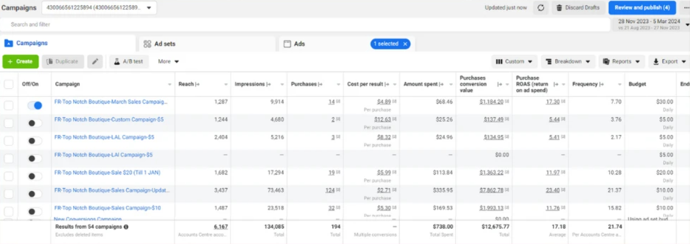
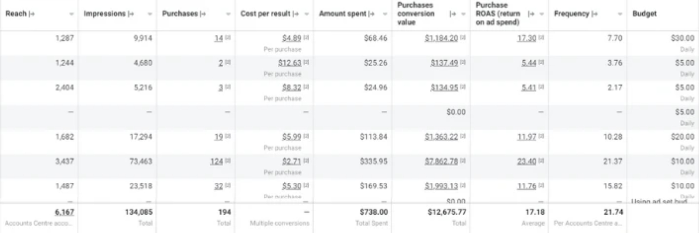
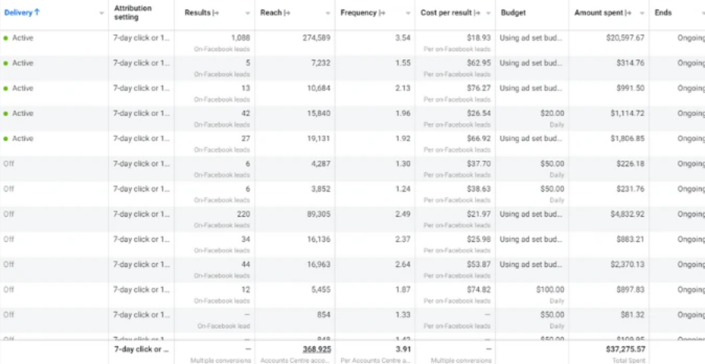
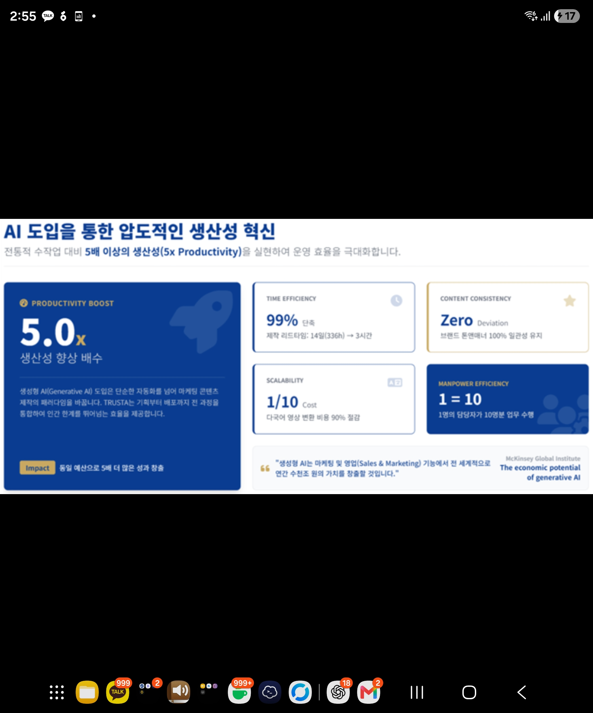
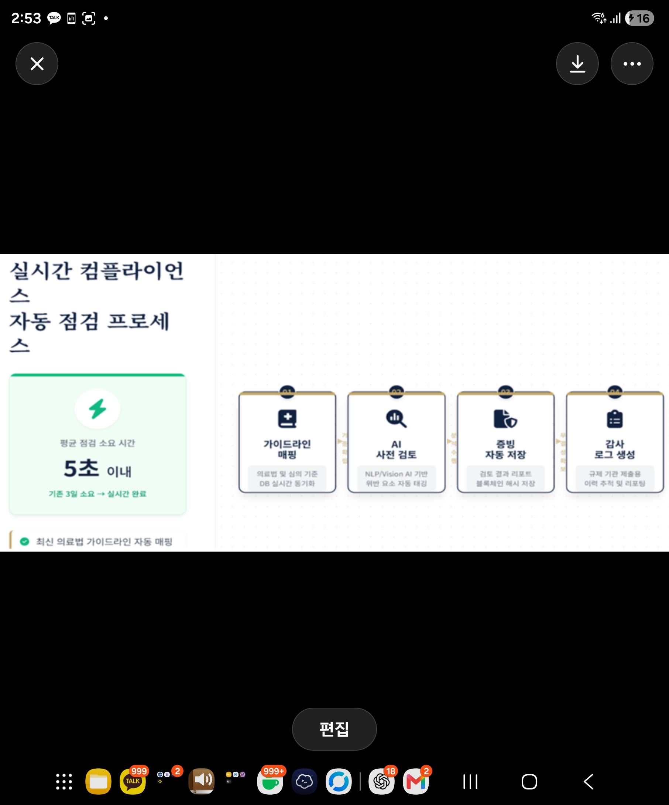
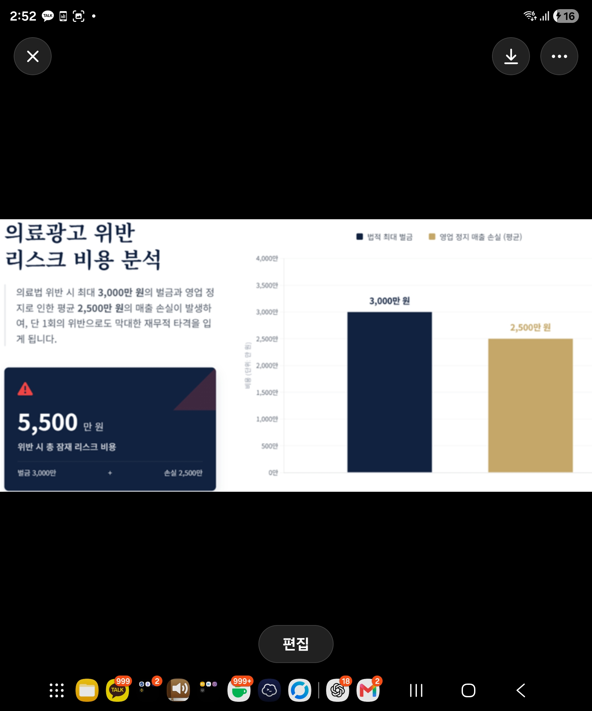
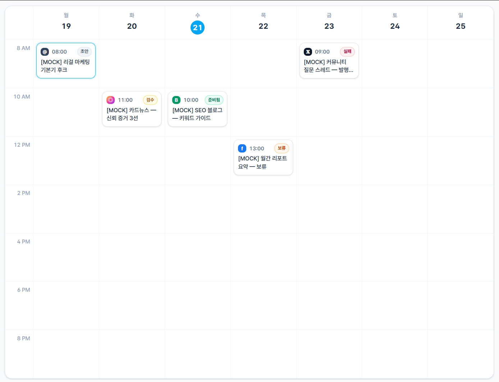
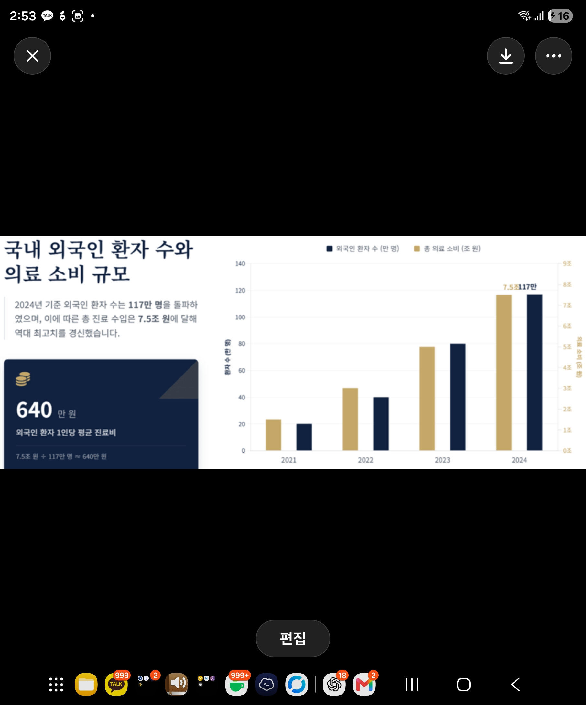

K-뷰티 브랜드부터 피부과·성형외과·치과까지 — 해외 고객에게 어색하지 않도록 표현과 흐름을 다시 정리합니다.
클릭하여 업로드 · 학위증·자격 증빙 권장 1000×1400px(세로)
자동화 도구가 만든 초안을, 실제 해외 마케팅을 운영해 본 전문가가 표현 수위·근거·현지 말투 기준으로 다시 봅니다.
누적
해외 진출 콘텐츠를
검수했습니다
K-뷰티 브랜드부터 피부과·성형외과·치과까지, 해외 고객에게 어색하지 않도록 표현과 흐름을 다시 정리합니다.
클릭/드래그하여 업로드 · UI·UX 캡처 권장 1600×1000px
예쁜 문구보다 중요한 것은 근거, 표현 수위, 국가별 설득 방식입니다. 해외 콘텐츠는 발행 전 검증이 필요합니다.
번역만으론 전환이 어렵습니다.
피부과 이벤트 문구에서 효과를 단정하는 표현은 줄이고, 상담 문의 흐름은 더 분명하게 정리했습니다.
클릭하여 업로드 · 광고 성공사례 증빙 권장 1600×900px



* 실제 Ads Manager 캡처 · 계정/수치는 운영 기준
많은 브랜드가 번역본은 준비하지만, 다음을 놓칩니다.
현지 고객이 읽는 말투
광고 표현의 안전성
문의까지 이어지는 동선
카드뉴스 한 장부터 해외 고객용 랜딩페이지까지, 브랜드 상황에 맞춰 구성합니다.
캠페인별 ROAS (광고비 대비 매출)
검수 위험도 분포
* 데모 수치(MOCK) · 실제 운영 데이터로 교체 예정
AI 도입 생산성 혁신
제작 리드타임 14일 → 3시간, 다국어 변환 비용 1/10

실시간 컴플라이언스 자동 점검
최신 의료법 가이드라인 자동 매핑 · 평균 점검 5초 이내

의료광고 위반 리스크 비용
위반 1회 잠재 비용 최대 5,500만 원 (벌금 + 매출 손실)

TRUSTA는 현지 고객이 읽고 이해하는 방식을 기준으로 콘텐츠 운영 흐름을 다시 설계합니다. 기존 자료만 있어도 브랜드·병원·화장품 콘텐츠를 국가별 채널에 맞게 다시 정리할 수 있습니다 — 새로 만들기 전, 기존 콘텐츠부터 살립니다.
근거·출처·표현 수위·현지화 기준을 확인하고 발행 가능한 문장으로 정리합니다.
월간 콘텐츠 캘린더를 기준으로 SNS 주제·카드뉴스·릴스 문구·블로그·광고 소재·FAQ를 한 달 단위로 설계하고 운영 흐름까지 제안합니다.

TRUSTA가 보는 핵심은 많이 만드는 콘텐츠가 아니라, 안전하게 오래 운영되는 콘텐츠입니다.
번역·자동화만으로는 닿지 않는
표현 리스크와 현지화까지 책임집니다.
의료·광고법 표현 리스크 1차 검수
자동화 SaaS·일반 대행사가 놓치는 영역
국가별 말투 현지화 + 사람 검수
日·中·영어권 톤 차이까지 반영
제작 속도와 비용 효율 동시 확보
AI 제작 + 전문가 검수의 결합 구조
* 비교 도식은 포지셔닝 설명용 예시이며 수치는 확정값이 아닙니다.
SNS 카드뉴스·캐러셀·블로그·랜딩·광고 문구를 구성합니다.
의료·화장품 리스크, 효과 보장·과장·번역투, 국가별 말투 차이를 재점검합니다.
빠르게 만들고, 발행 전 한 번 더 안전하게 검토합니다.
AI 검색, SNS 추천, 해외 검색 유입, 현지 고객의 후기 탐색은 따로 움직이지 않습니다.

출처 · 발급 기관 확인 후 갱신
기존 콘텐츠를 살리고, 국가별로 다시 나누고, 위험 표현을 줄여 운영 부담을 낮춥니다.
촬영물이 부족해도 기존 이미지와 문구를 먼저 활용할 수 있습니다. 단, 의료·화장품 표현은 업종별 기준 확인이 필요합니다.
[ 법률 검토 범위 · TBD ] [ 국가별 심의 기준 · TBD ]
먼저 표현 가능 범위를 정한 뒤 콘텐츠 제작을 진행합니다.
소규모 테스트부터 월간 운영까지, 브랜드 상황에 맞춰 제작 범위와 검수 단계를 유연하게 조정합니다.
가격 · TBD
가격 · TBD
가격 · TBD
콘텐츠 제작 · 현지화 · 광고 표현 리스크 1차 검수 · 성과 리포트 포함. 상담 후 범위를 확정합니다.
[ 제공 범위 · TBD ]브랜드·병원·상품 정보를 전달합니다.
목표 국가, 고객층, 금지 표현, 기존 콘텐츠를 확인합니다.
TRUSTA가 콘텐츠 방향과 제작 범위를 정리합니다.
AI 제작 후 Graphify 기준으로 다시 검증합니다.
사람 검수 단계에서 승인·보류·수정 요청을 확인합니다.
확정본은 SNS·블로그·랜딩페이지 등 채널별로 납품합니다.
월관리형은 성과 리포트와 다음 개선 방향을 함께 제공합니다.
상담 신청 후 목표 국가, 업종, 필요한 콘텐츠 유형을 정합니다.
기존 문구, 이미지, 상세페이지, 광고 소재, 블로그 자료를 공유합니다.
TRUSTA가 전략·제작·현지화·표현 리스크 점검 범위를 제안합니다.
초안을 확인한 뒤 수정 요청을 반영합니다.
최종 납품 후 월관리형은 다음 콘텐츠 캘린더와 개선 방향을 이어서 제공합니다.
AI 초안을 그대로 발행하지 않고, 근거·출처·표현 리스크·현지화 말투를 다시 확인합니다.
아닙니다. 1차 표현 리스크 점검이며, 최종 법률 판단이나 국가별 심의는 전문가 확인이 필요합니다.
범위에 따라 가능합니다. 국가별 표현 기준, 비주얼 톤, 언어 검수 범위는 상담 후 확정합니다.
TRUSTA는 성과를 보장하지 않으며, 표현 리스크를 낮추고 발행 전 완성도를 점검하는 1차 검수 구조를 제공합니다. 국가별 심의와 법적 기준은 별도 확인이 필요합니다.